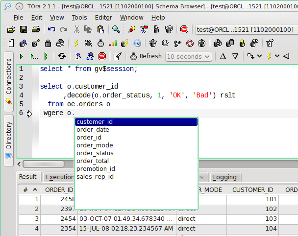
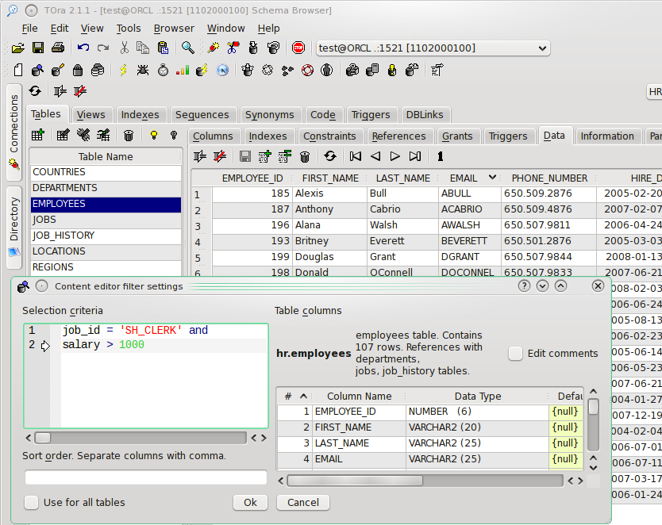
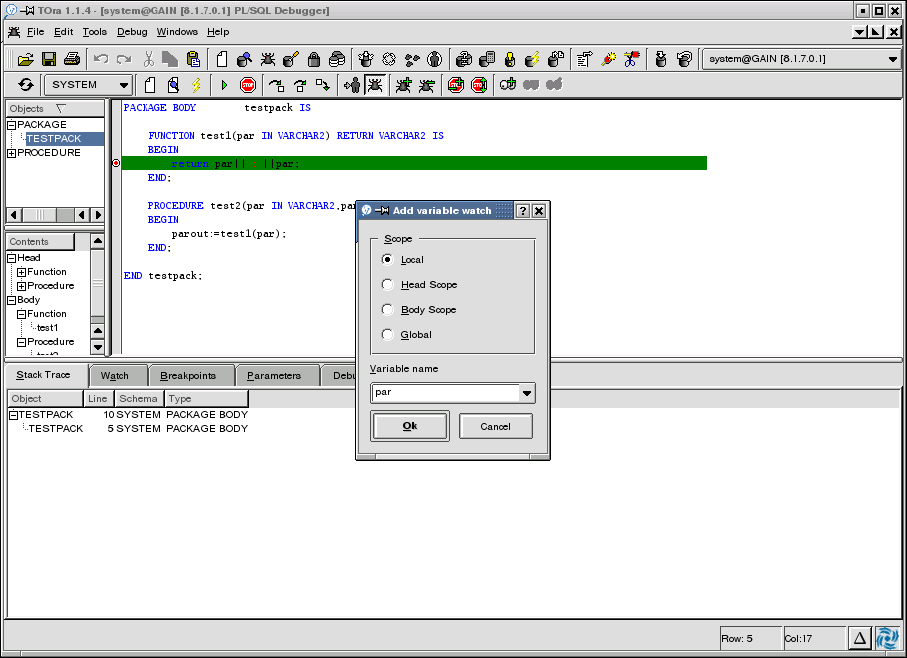
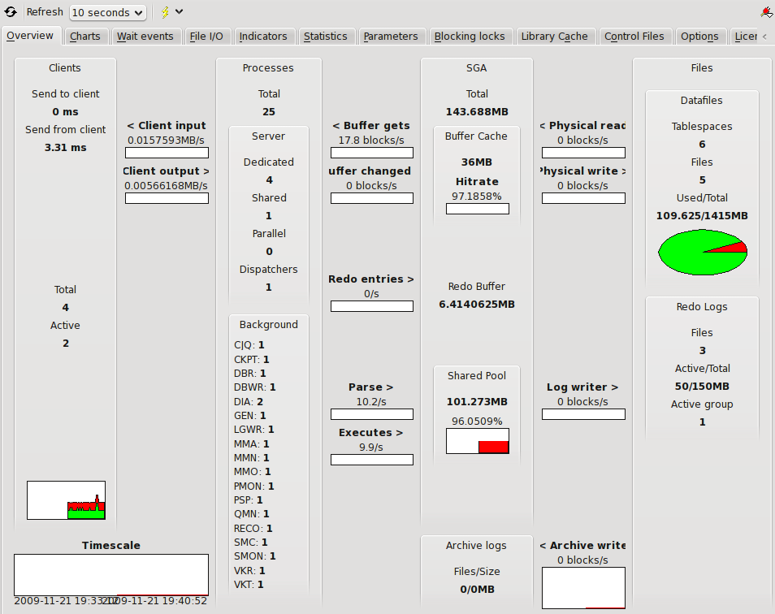
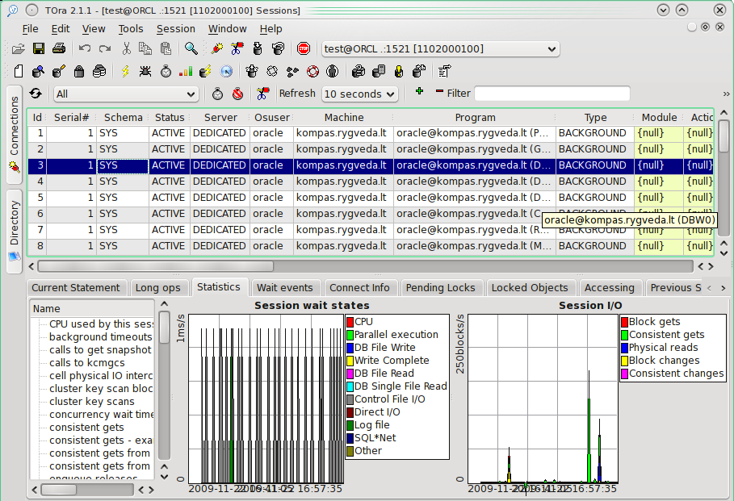
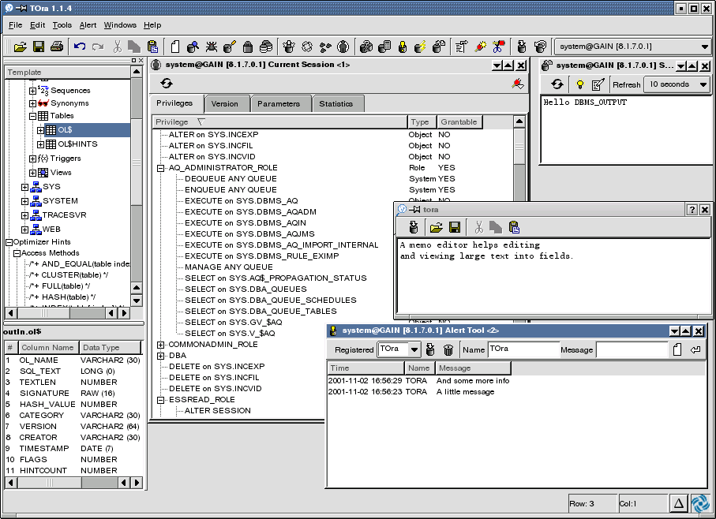
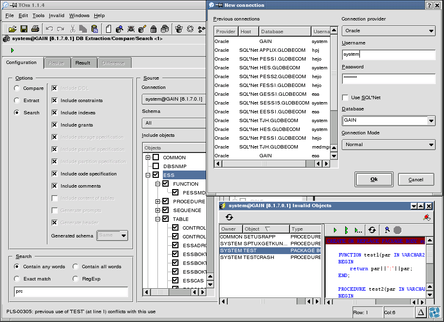

| SQL Worksheet with syntax highlight and code completion. |
|  |
| Schema browser with content editor and data filter. |
|  |
| PL/SQL Debugger with stack trace and watches. |
|  |
| Server tuning. |
|  |
| Security manager. |
 |
| Storage manager with extent & object lists. |
| Session manager with I/O and wait state statistics. |
|  |
| Rollback manager with snapshot too old detection. |
| SGA trace & long operations browser with explain plan. |
| Statistics manager with parallel analasis detecting. |
| Template help, current session, alert tool and SQL output. |
|  |
| Schema search, extract and compare, invalid object and new connection dialog. |
|  |
| >>Back to screenshots>> |